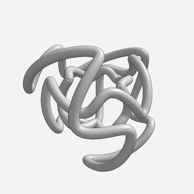

Illusory Ribbons 3D
Grey tubes that cross in every view; the camera swings round them. v2: 2 to 8 plainer loops, thicker tubes, gentle waves. v3: 2 to 8 rings instead of tubes: nothing to follow. v4: a new question: how many thin rings are linked with the thick one, 0 to 3. The tubes are flat and covered in dots, so a still picture does not show which ring is in front where two cross; only the motion does. v6: four v4 pictures in a 2 x 2 grid: tap every picture in which exactly 1 (or 2) thin rings are linked with the thick ring. v5.3: v5.2 with 4 thin rings in every picture, 0 to 4 of them linked. v7.3: the grid with four v5.3 pictures. v5.4: v5.3 with 3 thin rings in every picture, 0 to 3 of them linked. v7.4: the grid with four v5.4 pictures. For comparison, the paper's own type: Illusory Ribbons, flat coloured loops to count in each of 16 cells.